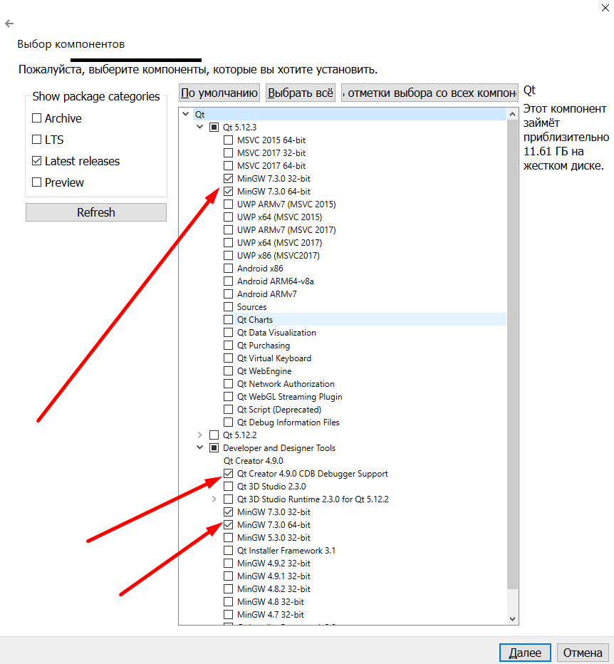
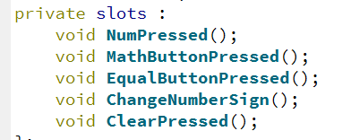
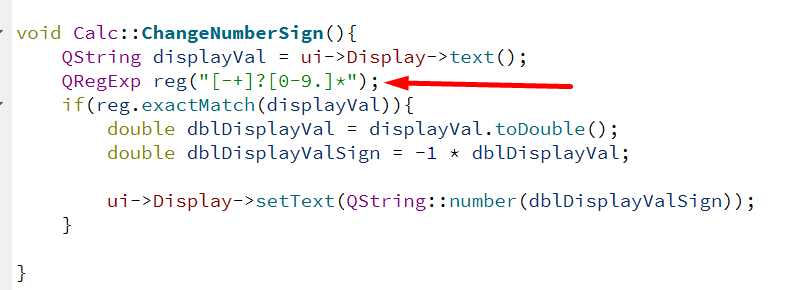
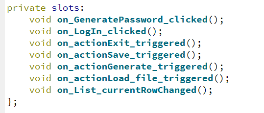
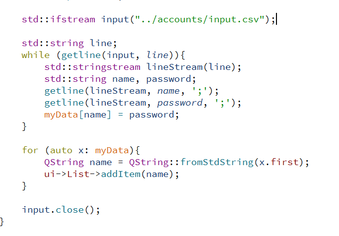
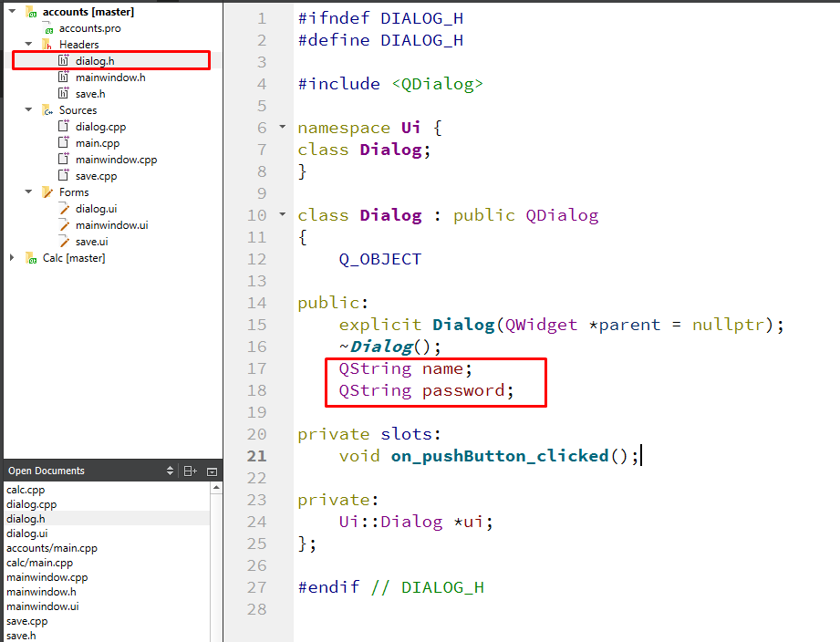
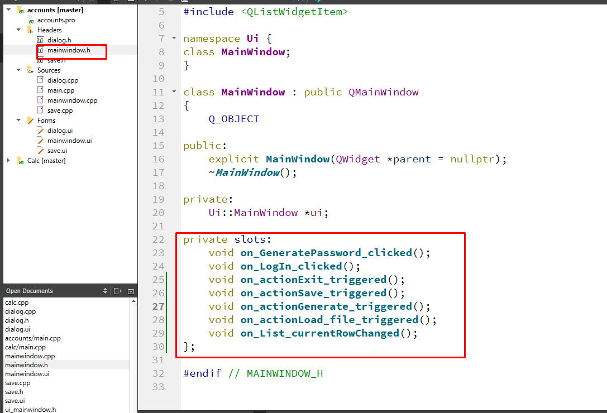

Скачать
Зарегаться внутри приложения или на сайте
Главное - отметить эти пункты
Все кнопки - Push Button. Строка, в которой всё показывается - Line Edit. В правом окне, все кнопки были названы своими именами. Все элементы спозиционированны с помощью grid-layout.
В этом заголовочном файле описан класс, который как раз отвечает за графический интерфейс.
Здесь объявлены все функции, которые отвечают за обработку нажатий на клавиши, их реализация в файле calc.cpp
1 - Создается массив кнопок 0-9. Каждая кнопка с соответсвии с именем, присоединяется к нужному сигналу. Остальные кнопки подключается аналогичнов соотсветствии с названием
Большинство функций очень простые, однако в одной применяются регулярные выражения (специальный язык для поиска информации внутри строк по заданным условиям).
Во второй части задания есть три интерфейса. mainwindow - главное окно, которое запускается при запуске программы. dialog - окно, которое запускается по нажатию кнопки log in. save - которое запускается если нажать в меню save/load file.
В заголовочном файле этого интерфейса объявлены все "слоты", которые используются чтобы отслеживать действия пользователя.
Их реализация написана в файле mainwidow.cpp
При загрузке программы происходит считывание из файла input.csv (coma-separated view). Все изначальные фалйы и файлы, которые создадутся после, если ты нажмешь кнопку save, окажутся в папке accounts (основная папка проекта)
Здесь файл считывается построчно с помощью getline, а потом еще одним getline проходит по каждой строке и делит ее по ";". Затем он записывает это всё в map. Затем всё, что оказалось в map выводится циклом на экран.
Интерфейс dialog исползуется для того, чтобы считать введенный пользователем логин и пароль. После того как он их ввел и нажал "ок" то, что он написал окажется в классе dialog. Класс dialog описан в файле dialog.h. Там есть две публичные переменные, в которые всё сохраняется и потом эти строки используются в функциях в файле mainwindow.cpp.
Интерфейс save используется дважды. Первый раз - в функции save, чтобы узнать в какой файл сохранить текущий список с паролями. Второй раз - в функции load file, там пользователь указывает из какого файла надо загрузить имена и пароли. Опять таки, все файлы лежат в папке accounts
В заголовочном файле save.h тоже есть переменная строки string filename, как и в dialog.h
В заголовочном файле mainwindow.h объявлены все функции, которые используются программой.
Функции, заканчивающиеся на _triggered - функции, отвечающие за верхнюю менюшку. Они все выполняют ровно то, что написано в имени.
По заданию, в верхнем меню была кнопка "генерация" и снизу кнопка "генерация пароля". Я не особо понял, зачем их две, поэтому я сделал так, чтобы нижняя кнопка создавала только для выбранного поля пароль, а верхняя создавала сразу для всех элементов списка.
Когда ты вызываешь генерацию пароля для текущего поля, пароль, который сгенерировался всплывает внизу окошка. Он уберется как только ты кликнешь куда нибудь в другое место списка. Этим занимается функция on_List_currentRowChanged().